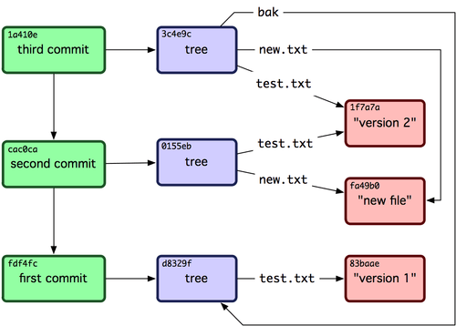

一直觉得 git 很神奇，他的分支切换很快，他的自动合并很智能，他在协作编码时有着不可替代的作用。所以这两天想研究下 git 的实现原理，参考的资料主要是 Git Internals,《Pro Git》的 Chapter 10, 还有中文版的 Git 内部原理.
# 1.git 目录组成
在创建或者拉取一个 git 仓库以后，我们会发现其中会有一个隐藏文件夹.git, 我们的版本控制就是靠这个.git 文件夹了.
.git 目录内有以下文件夹:

重要的文件或目录主要有这几个:
- HEAD: 指向项目当前分支的文件
- index: 保存暂存区域信息的文件
- objects: 存储所有数据内容的目录
- refs: 存储指向数据 (分支) 的指针的目录
- hooks: 存储钩子相关数据的目录
# 2.git 对象
git 底层其实是一套内容寻址文件系统。就是说 git 底层允许存入任何形式的内容，并返回一个键值，可以随时根据该键值取出存入的内容.
可以通过 git 的底层命令 hash-object 和 cat-file 存取 git 对象.
git 对象主要有 tree 对象，文件对象，commit 对象。按我的理解，git 对象的组织就像是 linux 的文件系统外再加一个 commit 对象，指向每次 commit 对应的 "根目录",tree 就对应 linux 中的目录.
书的第二章中做了个实验，以底层的指令完成 git add 和 git commit 的操作，完成后 git 的对象是这样的:
